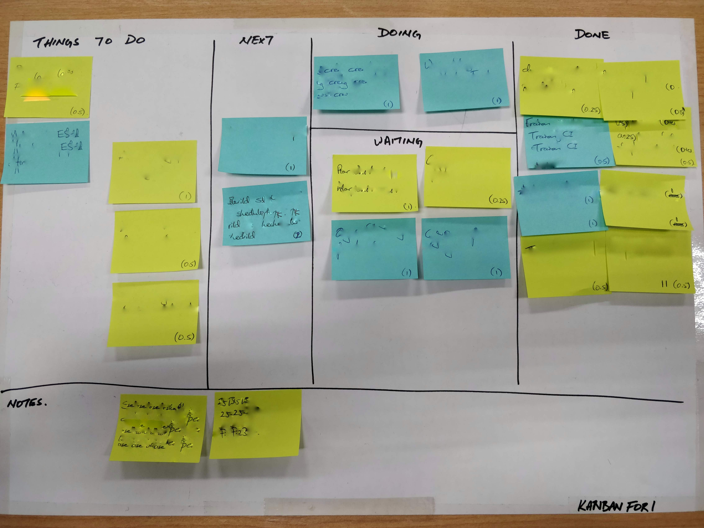

KanbanFor1 is a personal time management tool I’ve been using for a while now. I thought I’d share the learnings I’ve gained into the way that works best for me.
It’s good at getting me focussed
No matter what technique you use, managing your focus is an activity that requires a lot of discipline. For me, being able to stay focussed on one task gave me the biggest boost in productivity.
Just to highlight the difference, on a day where I stick to the Kanban way, I can typically finish 5 out of 6 tasks I set out to do. Whereas if I drop this practice and just get stuck into working, the day flies by with only 1 or 2 tasks completed.
The biggest insight I gained was that I needed to be really clear on the end goal or state of the task. If I have that in mind, then the goal seems to come around automatically. For example, when writing this article, I wrote the task as ‘Write a 500 word blog article to share my learnings’ rather than just ‘Write a blog article’.
Having this clear goal helps me to stay on writing, rather than tweaking words to make it sound perfect.
It’s good at prioritising
Taking the time to think about what I plan to achieve that day sets the day into motion. With a solidly planned day, I’m able to assess the distractions that come my way and decide whether I should take them on right now.
If I don’t take them immediately, I can drop them onto the board so I won’t forget it later on. This immeidately puts the worry that “it’ll be forgotten” at bay.
Knowing the immediate value I’m adding also give a great amount of motivation to get things done and completed.
It feels rewarding
Those of you who’ve done scrum / kanban would know that moving a task from in-progress to done is so satisfying. I feel KanbanFor1 re-creates this feeling more frequently, giving you a really positive sense to your day. Maybe it’s this positive feedback that makes me work so much better.
Example
Here’s a snapshot of my KanbanFor1 board at work. It’s blurred out the actual tasks but you can get the sense of what
it’s about. Admittedly there’s a lot of tasks in the WAITING state, which probably means I should retrospect on how I
can get them moving to done faster.
